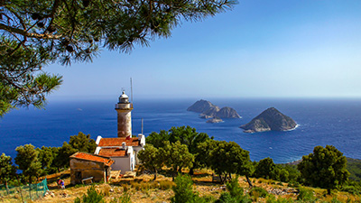
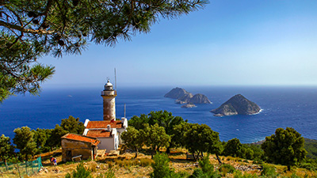
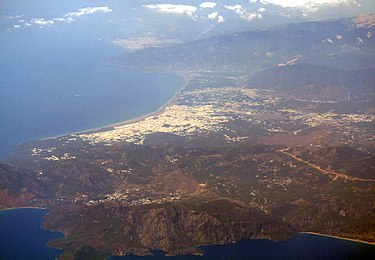
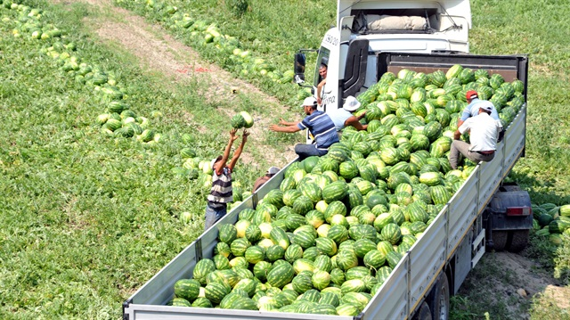
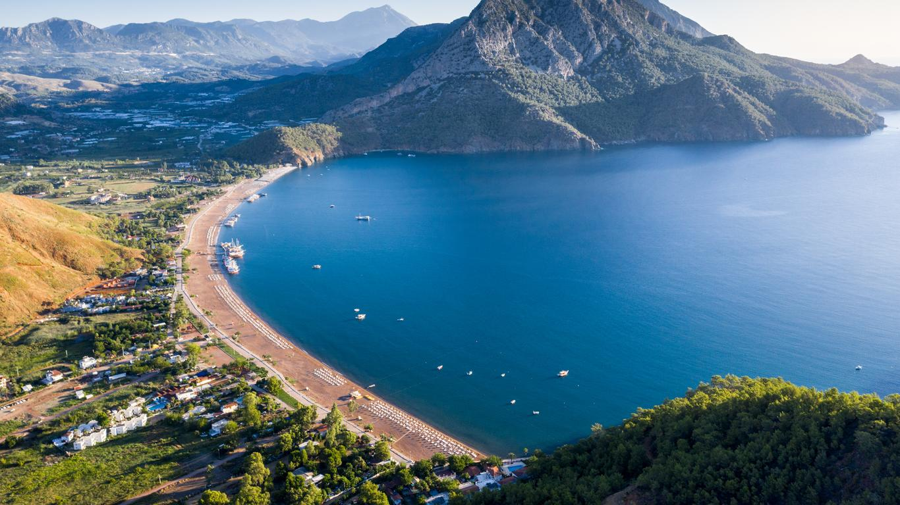

Antalya’nın Kumluca İlçesi, Sarıcasu Köyü yakınındaki Rhodiapolis, Rodoslular tarafından kurulmuş ve Likya Birliği üyesi olmuştur. En ünlü kişisi, Antonius Pius döneminde yaşamış hayırsever Opramoas’tır. Kent, Klasik Çağ kaya mezarları dışında, daha eski kalıntılara sahip değildir ve çoğunlukla Roma ve Bizans dönemi yapıları barındırır. Önemli kalıntılar arasında tiyatro, hamam, agora/stoa, tapınaklar, kilise, sarnıçlar ve nekropoller bulunur. Rhodiapolis’te ayrıca Grek planlı küçük bir tiyatro ve Opramoas’ın anıt-mezarı dikkat çeker. Nekropollerde Likya dilinde yazıtlı kaya mezarları da yer alır.
Kumluca

Tarihçe
Kumluca'nın ilk yerleşimi ilçenin merkezinin 5 km kadar doğusunda, tepelerin eteklerinde Sarı Kavak adıyla 1830 yıllarında kurulmuştur. Elmalı'dan ayrılan Finike ile Antalya'ya bağlı Iğdırmağardıç Bucağı Kumluca ve Kemer diye ikiye ayrılarak; Kemer Antalya'ya, Kumluca da Finike'ye bağlanmıştır. Bu sırada Sarıkavak, Iğdırmağardıç Bucağının bir mahallesidir. Bugünkü Kuzca Köyü ise o zaman ayrı bir bucak idi. 1924 yılında Kuzca Bucağının merkezi Gödene'ye (Altınyaka) alınmış ve zamanla göçebe halkın yerleşerek kalabalık bir merkez haline getirdiği bugünkü ilçe merkezinin bulunduğu yerde Kumluca bucağı kurulmuştur. Kumluca bucağı sonraları daha da büyümüş, 7033 sayılı kanunla 1958'de Finike'den ayrılarak ilçe olmuştur.
Nereden Geliyor
Henüz bugünkü ilçe merkezinde hiç yerleşme yokken, Sarıkavak'tan bir köylü Cavur Deresinin batı kıyısında kumluk ve fundalık bir arazi olan şimdiki şehir merkezinin bulunduğu yere karpuz ekmiş. Kumsal ve verimli arazide karpuzlar oldukça iri olmuş. Yetişen karpuzları yetiştiricisi köylere götürüp satarken, köylüler bu karpuzları nerede yetiştirdiğini sormuşlar. O da "derenin kıyısındaki kumluca yerde" diye cevap vermiş. Bu köylünün meşhur karpuzlarının methi, karpuzların yetiştiği yerin adının zamanla "Kumluca" olmasına neden olmuştur.

